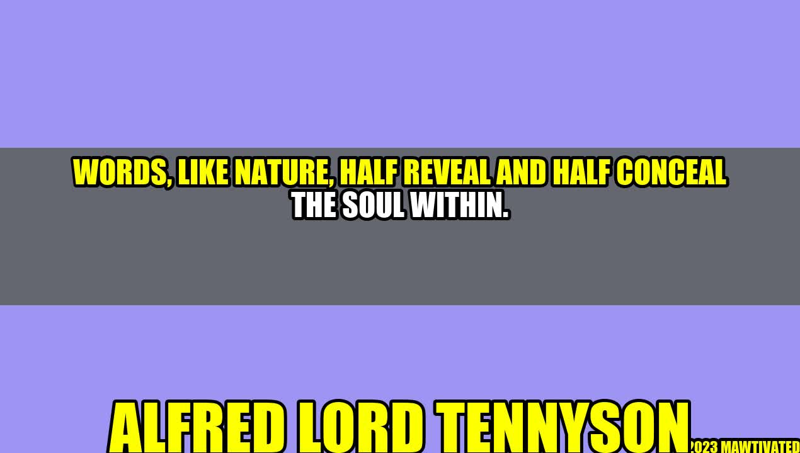

Words: The Duality of Meaning

An Inspiring Story
Once upon a time, there was a young girl who had always struggled with communicating her thoughts and ideas to others. She often felt misunderstood and frustrated by the limitations of language. It wasn't until she discovered the power of words and the art of storytelling that she found her voice and the courage to share her insights with the world. Through the written word, she was able to express her deepest feelings and emotions, and connect with others in a meaningful way.
The Duality of Words
As Alfred Lord Tennyson once said, "Words, like nature, half reveal and half conceal the soul within." This is the duality of words - they can reveal as much as they can conceal, depending on how they are used and interpreted. Words can be uplifting, inspiring and empowering, but they can also be hurtful, negative and even destructive. The power of words lies not only in their meaning, but also in their context, intonation and delivery. A single word can have different meanings and connotations depending on the speaker, audience and situation. This is why it is essential to choose words carefully and consider their impact before speaking or writing them.
and Case Studies
As an author and speaker, I have witnessed firsthand the transformative power of words. I have seen how the right words at the right time can change lives, inspire action and create lasting change. Conversely, I have also seen how the wrong words can cause pain, harm and division. One personal anecdote that comes to mind is when I first started writing for a public audience. I was afraid to express my authentic voice, fearing that I would be rejected or judged by others. But when I finally took the leap and shared my story, I was overwhelmed by the positive feedback and support that I received. Another example is the case study of a client who struggled with low self-esteem and confidence. Through coaching and motivational speaking, I helped her see the power of positive affirmations and reframing negative self-talk. By choosing words that empowered and uplifted her, she was able to make significant progress in her personal and professional life.
Author Background
Alfred Lord Tennyson was a British poet and writer who lived during the Victorian era. He is best known for his narrative poems and romantic themes, which reflected the social and cultural values of his time. Tennyson was often inspired by nature, mythology and history, and his works explored the complexities of human emotions and relationships.
The Importance of Choosing the Right Words
The words we choose and how we use them have a profound impact on our lives and the lives of others. Words can inspire us to greatness, motivate us to action and help us connect with each other on a deeper level. On the other hand, words can also hurt us, divide us and destroy our relationships and communities. Some practical tips for choosing the right words include: - Considering your audience and their needs and expectations - Being clear and concise in your communication - Using positive and empowering language - Avoiding negative self-talk and limiting beliefs - Asking for feedback and adjusting your language as needed
Conclusion
In summary, words are a powerful tool for expressing our thoughts and emotions, connecting with others and creating positive change in the world. However, their power lies in their duality - the ability to reveal or conceal, inspire or hurt depending on how they are used. By choosing our words carefully, we can create a better future for ourselves and the world around us. To summarize, always remember the following three points: - Words have the power to reveal or conceal depending on their context and interpretation. - Choosing the right words can inspire, uplift and empower others. - By being mindful of our language, we can create positive change in our lives and communities.
Hashtags:
#PowerOfWords #Communication #Inspiration #Empowerment #PositiveChange
SEO Keywords:
Words, duality, communication, power, inspiration, empowerment, positive change.
Article Category:
Personal Development, Self-improvement.
Curated by Team Akash.Mittal.Blog
Curated by Team Akash.Mittal.Blog
Share on Twitter Share on LinkedIn